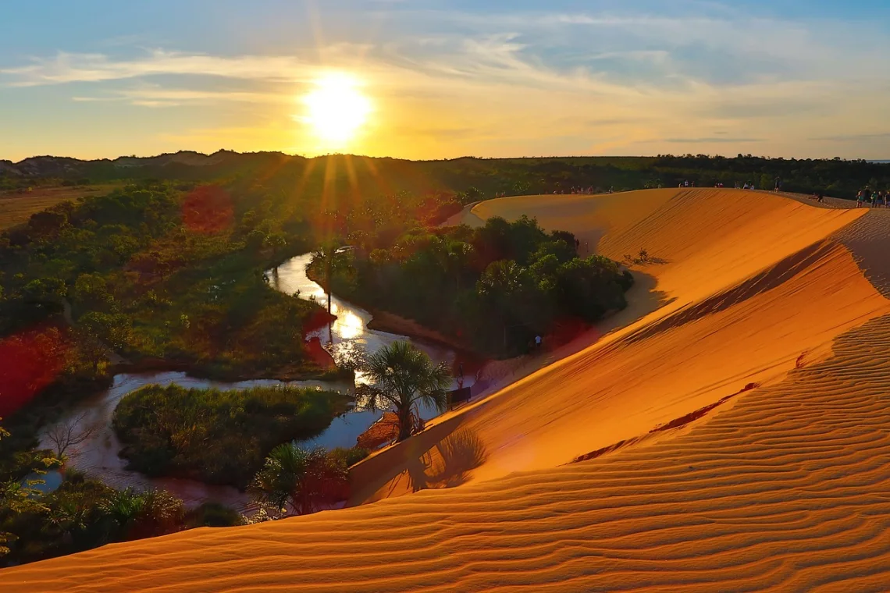

O Tocantins oferece uma diversidade impressionante de atrações turísticas, desde aventuras radicais no Jalapão até momentos de tranquilidade em praias fluviais e mergulhos em águas cristalinas. Com mais de 50 atrações naturais, 12 parques estaduais e 300km de rios navegáveis, o estado é um verdadeiro paraíso para ecoturistas e amantes da natureza.

Dunas Douradas
As majestosas dunas alaranjadas do Jalapão chegam a impressionantes 40 metros de altura, formando um cenário deslumbrante que contrasta com o céu azul do cerrado. Considerado o local perfeito para apreciar o pôr do sol mais espetacular do Brasil, as dunas oferecem uma experiência única de contemplação da natureza em sua forma mais pura e grandiosa.